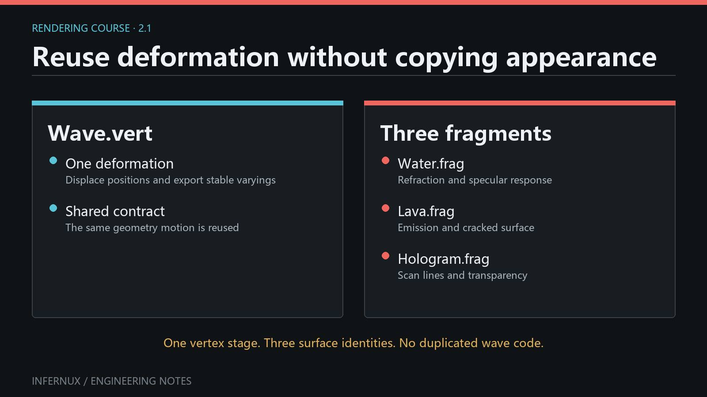
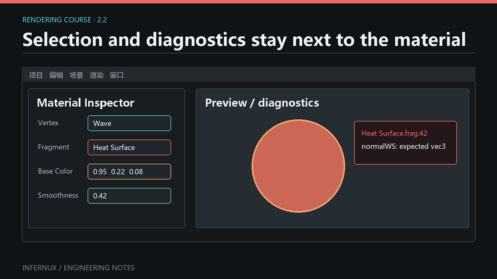

Custom Rendering · Chapter 2
Vertex stages and reusable deformation
The vertex stage answers one narrow question: where is this vertex, and what information should reach the fragment stage? Keeping it separate from the fragment stage lets the same deformation drive several visual styles. A wave vertex stage can support water, lava, holograms, or a depth-only utility without duplicating the motion.

The minimal stage
The standard mesh path needs only a name:
#version 450
ShaderInfo {
Name "Standard"
}
With no authored hook, Infernux supplies the normal mesh inputs and performs the standard object-to-world-to-view-to-clip transform. This is deliberate: ordinary materials should not repeat matrix boilerplate, descriptor layouts, or vertex locations.
Name is the exact, case-sensitive ID shown in the Material selector. The file name organizes the asset; it never becomes the selector value. A file named wave_bent.vert with Name "Wave" appears as Wave under Vertex.
How the Material finds it
When a .vert or .frag is imported from the project's Assets tree, the editor reads its compiled metadata and ShaderInfo Name. It also scans the built-in shader directory. A .vert appears in the Material's Vertex selector, a .frag appears under Fragment, and Hidden On entries stay out of both menus.
The current selector is keyed only by Name: it scans project Assets before built-in shaders, duplicate IDs collapse to the first path discovered, the menu does not show origin, and it emits no duplicate-origin diagnostic. Keep names unique across project and built-in shaders; do not depend on discovery order among project files. A project stage can retain its GUID/path reference, while a built-in stage is resolved by ID. After changing ShaderInfo Name, save and reimport the shader, then reselect the new ID on affected Materials. Renaming only the file leaves the selector ID unchanged.
The material linker pairs the selected stages and checks their properties and varyings before Vulkan pipeline creation. To verify selection semantics, save Assets/Shaders/wave_bent.vert with Name "Wave", wait for import, and confirm that Vertex lists Wave and does not list wave_bent.vert. Change only Name to Wave V2, reimport, and confirm that affected Materials require the new ID.
Where vertex data comes from
The hook edits VertexInput, but that public struct sits on top of a fixed engine vertex buffer. The buffer names below are implementation fields; shader authors use the VertexInput field in the next column:
| Location | Engine buffer field | VertexInput field |
Type | Notes |
|---|---|---|---|---|
| 0 | pos |
position |
vec3 |
Local-space position |
| 1 | normal |
normal |
vec3 |
Missing source normals face +Y |
| 2 | tangent |
tangent |
vec4 |
.w carries the bitangent sign |
| 3 | color |
color |
vec3 |
Defaults to white |
| 4 | texCoord |
texCoord |
vec2 |
Primary UV set |
| 5 | boneIndices |
Engine-owned | uvec4 |
GPU skinning palette indices |
| 6 | boneWeights |
Engine-owned | vec4 |
GPU skinning weights |
For example, location 0 is stored as pos in the C++ Vertex structure, then presented to user code as v.position. Shader code never accesses v.pos. The generated builtins mirror locations 0-6 and construct the public VertexInput contract from them. Bone attributes stay engine-owned because skinning runs after the hook. The hook sees pre-skin local data, and exposing bone values would invite per-instance logic that the current contract does not support.
Vulkan pipelines do not bind all seven attributes blindly. After SPIR-V compilation, FilterVertexAttributesForReflection() (VertexInputFilter.h) keeps only the locations the vertex shader actually reads, so a shader that never samples skinning does not create unused attribute descriptors; MaterialPipelineManager.cpp calls it during pipeline creation. The CPU-side buffer layout never changes.
Different geometry domains reuse or replace this layout:
- Mesh is the default domain: the seven-attribute buffer, the generated builtins, and the optional
vertex()hook. - Sprite renders a quad through the same mesh path (
SpriteRendererattaches an inline quad mesh), so it uses the identical layout and hooks. - Standalone programs such as
gizmo.vert,grid.vert, andflat.vertwrite their ownmain()underCapabilities [Standalone]. Gizmos still feed them the standardVertexstructure, but the author owns the whole vertex stage. - ParticleSprite is a separate domain with no vertex buffer at all. The particle sprite stage declares
Capabilities [ParticleSprite], and the engine builds six billboard corners from instance storage buffers insidemain(). Selecting a ParticleSprite or Fullscreen stage on a mesh Material fails with a domain error.
Evidence: the attribute table and defaults follow InxRenderStruct.h (Vertex and getAttributeDescriptions()); the reflection filter follows VertexInputFilter.h and its call site in MaterialPipelineManager.cpp; domain selection follows ShaderStageLinker.cpp and the stage capability sets.
Add deformation with vertex()
Define the fixed hook only when the geometry needs to change:
#version 450
ShaderInfo {
Name "Wave"
}
void vertex(inout VertexInput v) {
float phase = v.position.x * 4.0 + _Globals._Time.x * 2.0;
v.position.y += sin(phase) * 0.1;
}
The hook edits object-space VertexInput; the generated stage continues through the standard transforms afterwards. This preserves engine features that depend on a consistent geometry contract, including camera rendering, shadows, picking, and compatible motion data.
Choose the coordinate space intentionally. Object-space deformation follows object rotation and scale. World-space behavior needs an explicit calculation through the generated world transform or an imported helper.
_Globals._Time follows one source-defined convention: .x is unscaled seconds accumulated by the renderer, .y is sin(x), .z is cos(x), and .w is the current render-frame delta in seconds. The clock starts when the renderer is initialized, advances in Edit Mode and while gameplay is paused, does not reset on Play/Stop, and is unaffected by Time.time_scale; one unusually long frame contributes at most 1/3 second. Time.shader_time is the public CPU-side value that mirrors _Globals._Time.x. Restarting the renderer starts a new clock, so do not use _Time.x as saved gameplay time or a deterministic simulation tick.
Generated mesh-path boundary
For ordinary mesh variants, Infernux calls vertex() on unskinned object-local data, records the post-hook local position, then applies current skinning and the current per-instance model transform. VertexInput exposes position, normal, tangent, color, and texCoord; it does not expose bone indices/weights, an instance ID, or custom per-instance payload. One Material hook therefore runs identically for every instance before each instance transform.
This order has concrete consequences:
- A skinned mesh carries the deformed local position through the generated bone palette. The hook cannot branch on bone data through the current
VertexInputcontract. - Instanced meshes receive a generated current instance transform; the Motion variant also receives its previous transform. The hook has no public per-instance selector, so it cannot express instance-specific deformation. Split renderer/material configurations when instances need different hook behavior.
- The generated model normal transform uses an inverse-transpose matrix, so non-uniform object or instance scale is handled after the hook. It cannot reconstruct a normal or tangent left stale by the deformation. Skinned directions use the bone matrix's
mat3; non-uniform scale inside bone matrices needs asset-specific visual verification.
If an effect changes the visible silhouette, verify the Scene camera, Game camera, shadow caster, object picking, and motion-vector path. The generated variants reuse the hook, but bounds and previous-frame procedural deformation still have separate limits described below.
Stage interfaces without manual layouts
Infernux owns Vulkan locations, descriptor sets, generated uniform blocks, and push-constant layouts. Leave layout(location=...) and layout(set=..., binding=...) to the compiler. Structured Inputs, Outputs, Resources, and PushConstants describe intent; the shader compiler assigns the physical interface.
Here is a complete pair. Save the first file as Assets/Shaders/wind_bent.vert:
#version 450
ShaderInfo {
Name "Wind Bent"
Outputs {
Smooth Float2 detailUV Semantic(TexCoord7)
Smooth Float windMask
}
}
VertexOutput vertex(inout VertexInput v) {
VertexOutput result;
float phase = v.position.x * 4.0 + _Globals._Time.x * 2.0;
float bend = sin(phase) * 0.1;
v.position.y += bend;
result.detailUV = v.texCoord * 2.0;
result.windMask = clamp(abs(bend) * 10.0, 0.0, 1.0);
return result;
}
Save the consumer as Assets/Shaders/wind_surface.frag:
#version 450
ShaderInfo {
Name "Wind Surface"
ShadingModel Unlit
Inputs {
Smooth Float2 detailUV Semantic(TexCoord7)
Smooth Float windMask
}
}
void surface(out SurfaceData s) {
s = InitSurfaceData();
s.albedo = vec3(fragmentInput.detailUV, fragmentInput.windMask);
}
Create or open a Material, select Wind Bent under Vertex and Wind Surface under Fragment, then assign it to a MeshRenderer. The producer writes both members of VertexOutput; the consumer reads those same members from fragmentInput.
Names, types, interpolation, semantics, and declared spaces form one contract. Float4 to Float3 and Smooth to Flat both produce link errors. A missing or mismatched member is reported before Vulkan pipeline creation.
Location assignment is engine-owned as well. The built-in varyings occupy locations 0-6 (v_WorldPos, v_Normal, v_Tangent, v_Color, v_TexCoord, v_ViewDepth, and the internal LineRenderer tint). Authored varyings start at location 7. The linker sorts them by semantic first, then by name, so the declaration order in the file does not decide the layout; a mat4 consumes four consecutive locations. The ceiling is location 15, and location 15 itself is reserved for engine pass data such as the picking ID. ShaderStageLinker applies these rules when the stages link at import time.
Two checks enforce the contract. At import time, the stage linker pairs every fragment Inputs member with a vertex Outputs member by name and compares type, interpolation, semantic, and space. Its diagnostics cover a missing vertex output, a type mismatch, an interpolation mismatch, a semantic mismatch, a space mismatch, duplicate varyings, duplicate semantics, and the location ceiling. At runtime, when the linked program is created, ShaderProgram::ValidateStageInterface() reflects the compiled SPIR-V and compares each fragment input with the vertex output at the same location, including the vector width. A stage pair that passes the source-level link but disagrees in reflection fails program creation before any Vulkan pipeline is built.
Custom varyings are only needed when the fragment stage needs data beyond the standard contract. Built-in surface helpers already expose standard UVs, vertex color, world normal, and related mesh data.
Space(World) is a checked label with no transform behavior. The linker verifies that producer and consumer use the same label; object-to-world multiplication remains author code. Compute a value in world space first with the transform or helper available to that geometry domain, then declare it Space(World) on both sides. Tagging object-space v.position as world space creates a consistently mislabeled varying.
Bounds, normals, and tangents
Changing v.position moves GPU vertices while the CPU mesh data stays unchanged. The renderer gets bounds, normals, and tangents from that mesh data, and each solves a different problem:
- Bounds decide whether a renderer is submitted for camera and shadow culling and also support Scene-view framing. Infernux derives local bounds from imported or inline mesh vertices, then transforms that box to world space. Shader motion is invisible to that calculation. The current Editor and Python binding expose no per-renderer bounds override;
MeshRenderer.get_world_bounds()returns the six-value world AABB for inspection only. - Normal describes the surface direction used by lighting. Translation preserves it; bending, waves, and uneven displacement usually change it. Update
v.normalin object space when the deformation changes the local slope. The generated stage handles the later skinning and world-space normal transform. - Tangent supplies the UV-aligned axis used with the normal to build the tangent basis for normal maps. If deformation rotates that axis, update
v.tangent.xyztoo and preserve or deliberately recompute its handedness in.w. Otherwise the silhouette can look right while normal-mapped light slides in the wrong direction.
Reproduce a bounds failure before choosing a workaround:
- Assign the
Wavestage to a Cube, temporarily raise the amplitude from0.1to1.0, and keep the Cube's Transform scale at(1, 1, 1). - In Game view, move the Cube slowly toward the top edge of the camera frustum. At some phases, displaced vertices are still mathematically inside the view after the original CPU box has left it; the whole renderer then disappears. A shadow may disappear at a different light-frustum edge for the same reason.
- With the Transform held fixed, inspect
MeshRenderer.get_world_bounds()from an Editor script over several frames. The tuple remains constant while_Timechanges the visible vertices. A clean Console plus this constant box distinguishes culling from a shader compile failure. - Restore a conservative amplitude or author/import a mesh whose CPU vertex positions cover the complete deformation envelope. For procedural geometry, calling the public
set_inline_mesh_data(...)recomputes bounds from every supplied position; indexed data can include envelope positions that are not referenced by a triangle. There is currently no direct public call to enlarge the existing renderer bounds.
Arbitrary GLSL gives the engine no basis for inferring bounds, normals, or tangents. For a displacement texture, sample neighboring heights and rebuild the local normal/tangent from the new slope. Verify the CPU envelope separately with the frustum-edge test above.
Reuse and debugging
Treat .vert files as geometry behavior and keep them independent of specific material names. Useful reusable stages include wind bending, water displacement, vegetation flutter, skinning variants, or a standard unmodified mesh path.
When a material disappears after changing its vertex stage, check in this order:
- The selected value matches
ShaderInfo Nameexactly, including case, and does not collide with another project or built-in ID. - The shader finished import. Clear Console, save/reimport the file, assign the Material again, and treat any import, stage-link, or Vulkan pipeline error as a failed check.
- A stage with custom
Outputsreturns aVertexOutput; a stage that only edits built-in geometry may use thevoid vertex(inout VertexInput v)hook. - Every custom output has a matching fragment input with the same name, type, interpolation, semantic, and space.
- The stage belongs to the geometry domain expected by the Material. Fullscreen and particle programs are rejected with a domain error.
Verify shadow, picking, and motion variants
The compiler places the same hook in compatible color, shadow/depth, picking, and motion vertex variants. Verify the observable product of each path:
- Color: clear Console, reimport, assign the Material, and confirm the same animated silhouette in Scene and Game. No new shader/link/pipeline error is allowed.
- Shadow: add a large Plane below the object, use a shadow-enabled Directional Light, and keep the deformed renderer's
casts_shadowsenabled. Move the light or camera until the wavy edge is legible. The shadow silhouette must move with the visible silhouette; an early disappearance near the light frustum points back to CPU bounds. - Picking: in Scene view, click a visibly displaced part that is still inside the submitted renderer. The same GameObject must become selected in Hierarchy. Repeat at two different wave phases.
- Object motion: create the built-in Motion Blur RenderEffect, mount it in an active RenderStack's
finalstage as described in RenderStack mount points, and animate the object's Transform during Play. Visible blur on the moving object verifies previous model transforms. Duplicate the opaque object so both MeshRenderers share one mesh and Material, then move them independently; this setup is eligible for automatic instance batching and exercises per-instance history. On a skinned test mesh, play a bone animation and check the moving limbs to verify previous bone transforms. - Procedural local motion: keep the object Transform still and observe the
_Timewave with Motion Blur or TAA. The current Motion variant reuses the current frame's post-hook local position for both clip-space histories, then applies previous bone and model transforms. It does not evaluate the hook with previous_Time. Time-driven local deformation therefore has no reliable self-motion vector and may show missing blur or TAA ghosting. Accurate previous-frame procedural deformation requires work outside the current public vertex-hook contract.

Wave; the adjacent example shows a fragment-stage type diagnostic. This is a schematic, not a pixel-exact Editor capture.Name discovery follows inspector_shader_utils.py. Hook order and generated variants follow the mesh, shadow, picking, and motion templates plus InxShaderLoader.cpp. The vertex attribute layout and reflection filter follow InxRenderStruct.h and VertexInputFilter.h; stage pairing, its diagnostics, and location assignment follow ShaderStageLinker.cpp and ShaderProgram.cpp. The time convention follows EngineGlobals.h, InxRenderer.cpp, and timing.py. The bounds boundary follows MeshRenderer.cpp and the Python declarations in BindingScene.cpp; the documented public surface includes get_world_bounds() and set_inline_mesh_data(...), with no bounds setter.
The next chapter keeps this geometry stage and changes only what the surface is made of.